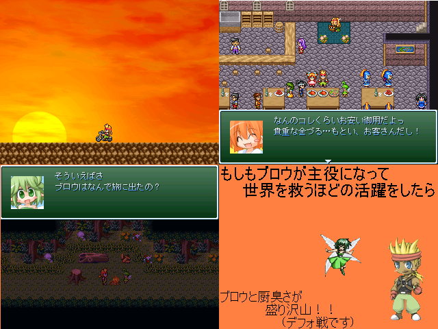

| No,007 【ブロウ救済計画第２章～もしもブロウが主役になって世界を救うほどの活躍をしたら～】 |
| ダウンロード（4.04MB） 修正ファイル（129KB） 2007/1/25 20:20 |
 |
| 【ＨＮ】 みつあみ 【ＰＲ】 俺がこのスレに来たときに始まったブロウ救済計画……
二章のくせして紅白参加とか無謀すぎる
それはさておき、内容はブロウが男前？で厨臭いデフォ戦ゲー
デフォ戦イヤな人はやらないほうが身のためだ
総プレイ時間はどのくらいになるか今の段階じゃわからん ゴメス
中編と長編の間くらいだと思ってくれればいいよ
厨臭いのには突っ込むなよ、それがやりたかったんだ
全てのツクーラーに栄光あれ
|
| 【管理人コメント】 厨臭いの大好き 極めれば良作にもなるんだぜ？ |